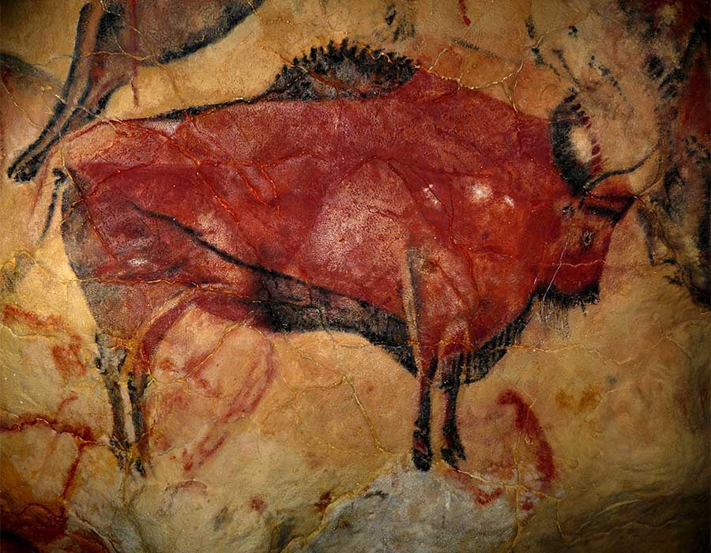

Paleolítico: arte como magia
No Paleolítico, a arte era carregada de intenção ritual e mágico-religiosa. As pinturas rupestres, como as da Caverna de Lascaux, não eram apenas representações da natureza, mas instrumentos de poder simbólico. O caçador-artista pintava o bisão não para admirá-lo, mas para dominá-lo — acreditava-se que ao criar a imagem, influenciava-se a realidade. Como destaca Gombrich, essa prática não era diferente de certos rituais contemporâneos, onde a imagem ainda carrega um valor simbólico. Quem nunca teve receio de rasgar uma fotografia importante?
O artista paleolítico, nesse contexto, era um intermediário entre o mundo visível e o invisível, entre os desejos do grupo e as forças da natureza. Seu papel se assemelhava ao do xamã: criar imagens para proteger, evocar, garantir a continuidade da vida.

Bisão da Caverna de Altamira, na Espanha
Neolítico: arte como vida coletiva
Com o surgimento da agricultura e da vida em sociedade, a arte muda de função. Hauser aponta que, no Neolítico, a arte adquire um caráter funcional e social, ligado à vida cotidiana e à organização comunitária. Estatuetas ligadas à fertilidade, cerâmicas ornamentadas, construções megalíticas como Stonehenge mostram que a arte passa a ser parte do cotidiano, da religiosidade coletiva e das novas estruturas sociais.
O artista neolítico não é mais um "feiticeiro visual", mas sim um artesão social, inserido nos processos coletivos. Sua arte representa os ciclos da vida, da morte, das estações, da espiritualidade e da identidade coletiva. Como lembra Gombrich, essa arte também não era criada para ser “bonita” segundo padrões modernos, mas para “funcionar” — seja como símbolo, como guia, como parte de um rito.
🔍 E hoje? O que essas origens dizem sobre nós?
Nos tempos contemporâneos, a arte muitas vezes retorna a essas funções ancestrais. Em comunidades periféricas, povos tradicionais, coletivos artísticos urbanos, vemos a arte como resistência, identidade, cura e ritual. Quando um grafite denuncia uma injustiça ou uma performance resgata memórias de um povo, estamos novamente diante de uma arte que "age", como agia nas cavernas.
As discussões sobre representatividade também têm raízes nesse percurso. Quem pode representar? Para quem se representa? Que imagens “valem” ser vistas? A arte paleolítica era feita para os espíritos, a neolítica para a aldeia — e a arte de hoje? Ainda é feita, muitas vezes, para elites e paredes de museu, mas cada vez mais também para as ruas, as redes e os encontros humanos.
Reflexão final
A arte pré-literária nos convida a repensar nossos próprios modos de ver, criar e interpretar imagens. Como afirma Gombrich, toda obra de arte carrega em si uma linguagem própria — e talvez o maior erro seja julgá-la pelos olhos errados.
Referências
HAUSER, Arnold. História Social da Arte e da Literatura.
GOMBRICH, E. H. A História da Arte.
https://arteref.com/movimentos/o-que-e-a-arte-rupestre-e-quais-sao-as-suas-caracteristicas/